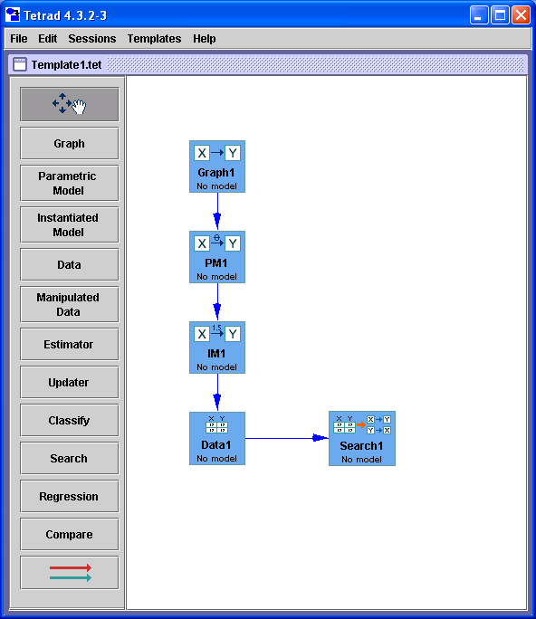

The Main Workspace Explained |
The main workspace in Tetrad consists of a workbench for building sessions, a toolbar for selecting types of boxes to add to the session, and a menu bar for performing operations like loading and saving sessions, and so on.
Tetrad 4 works with drag and drop objects, dialog boxes, drop down menus, and clicking. Occasionally you will need to typesomething brief--numerals and names.
Most Tetrad operations are performed with a single left click or a double left click. Right clicks are used for additional information or less common options.
The main workspace looks like this:

For an explanation of each part of this workspace, follow the link: